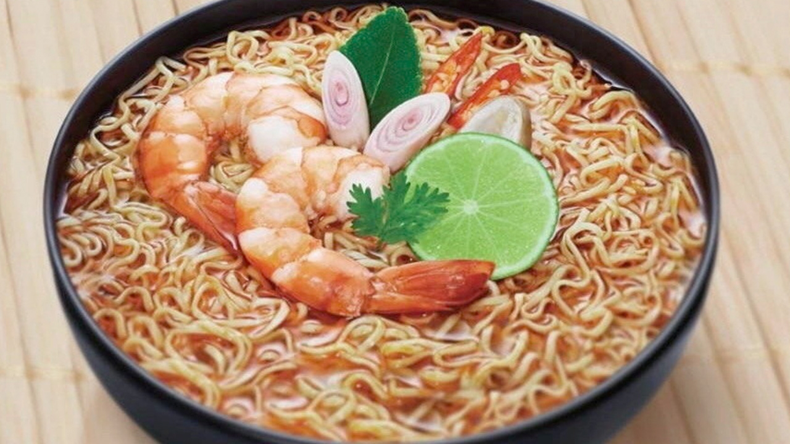

Instant Noodle

The easiest and cheapest meal for broke college students!
Convenient and quick-to-prepare meal option consisting of pre-cooked noodles in a flavored broth, often packaged with seasonings and garnishes.
Ingredients
- instant Noodle(recommended Nissin)
- cooked egg
- water 375 ml
- mince pork(optional)
Steps
- Boiled water in the pot.
- Add the meat(if you want to be fancy).
- Put the noodles in the pot.
- Wait until the noodle is soft,add seasonings.
- Add cooked egg for some more protein.
- TEst Test TEst